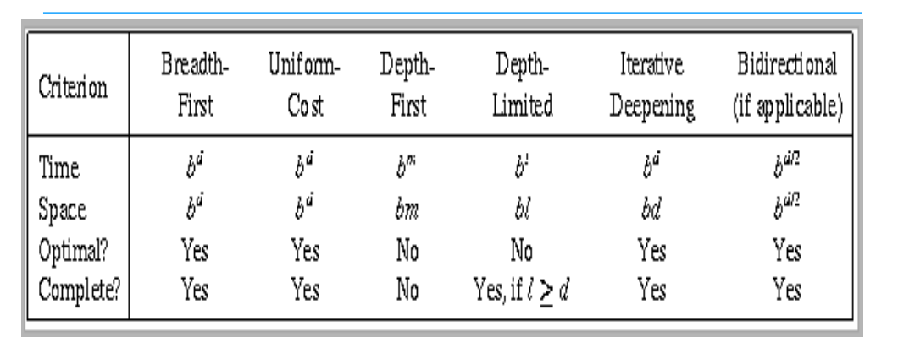
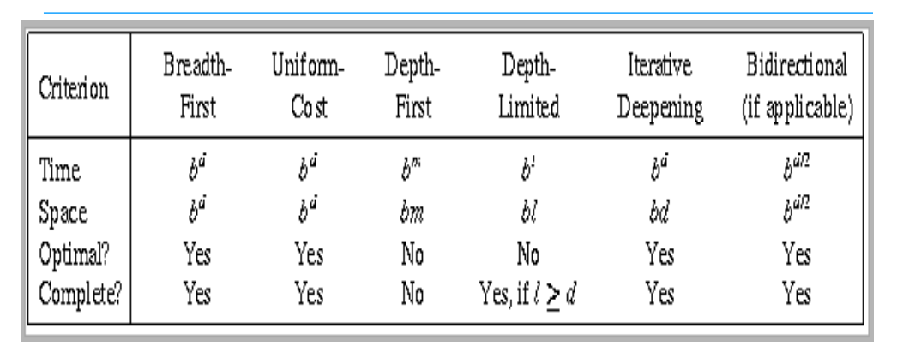

Non informed strategies
A Search strategies that do not use any domain knowledge but perform an exhaustive search strategy. This kind of strategy could be impractical for some complex problems
Non informed strategies comparison

A Search strategies that do not use any domain knowledge but perform an exhaustive search strategy. This kind of strategy could be impractical for some complex problems
